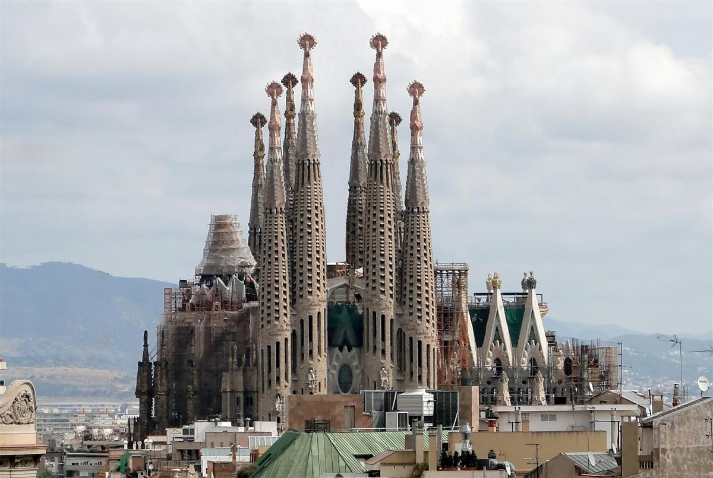
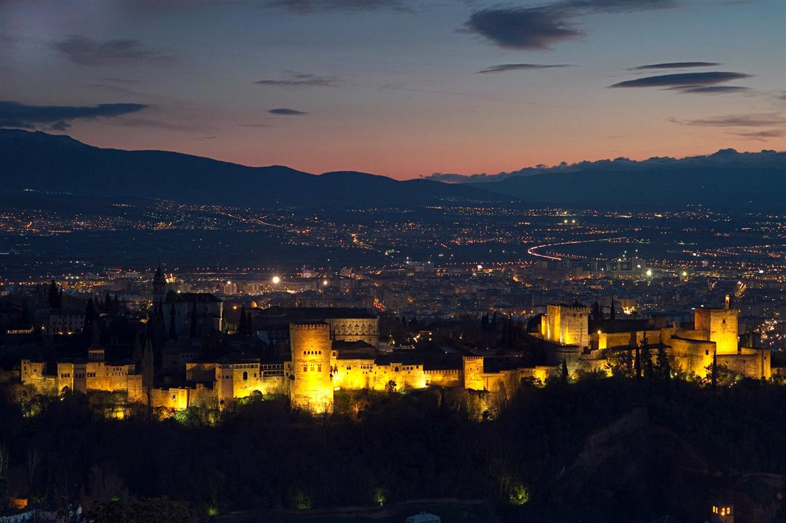
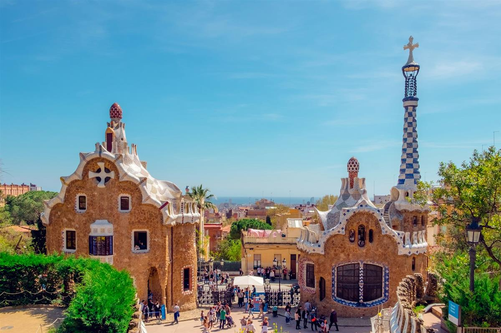
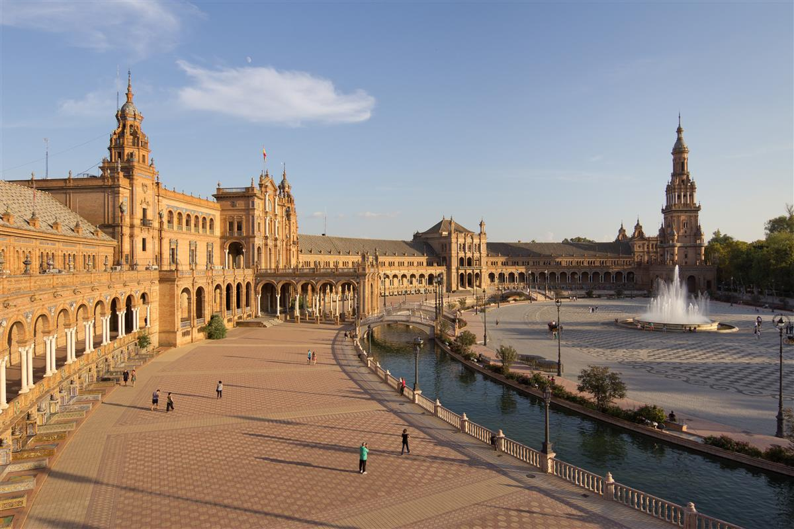
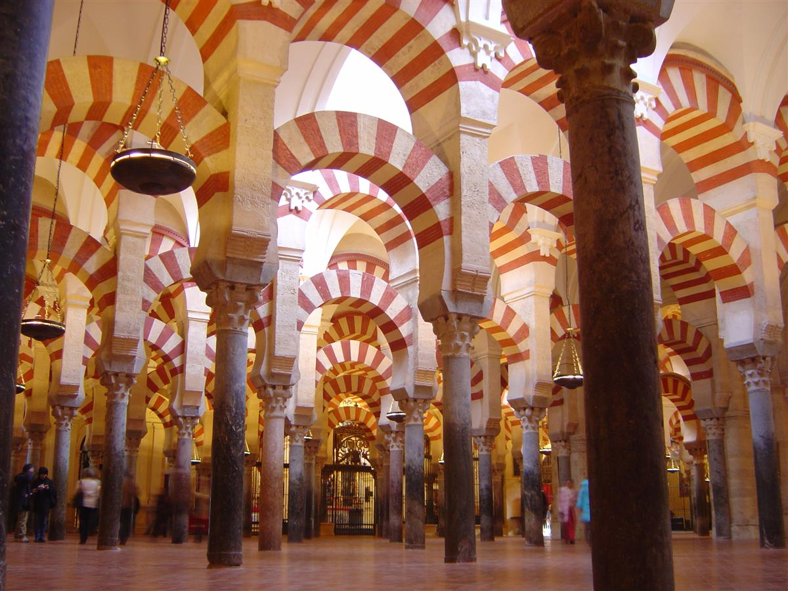
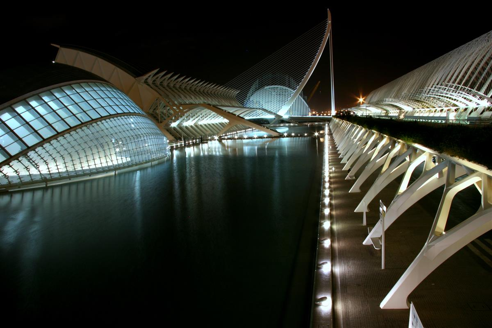
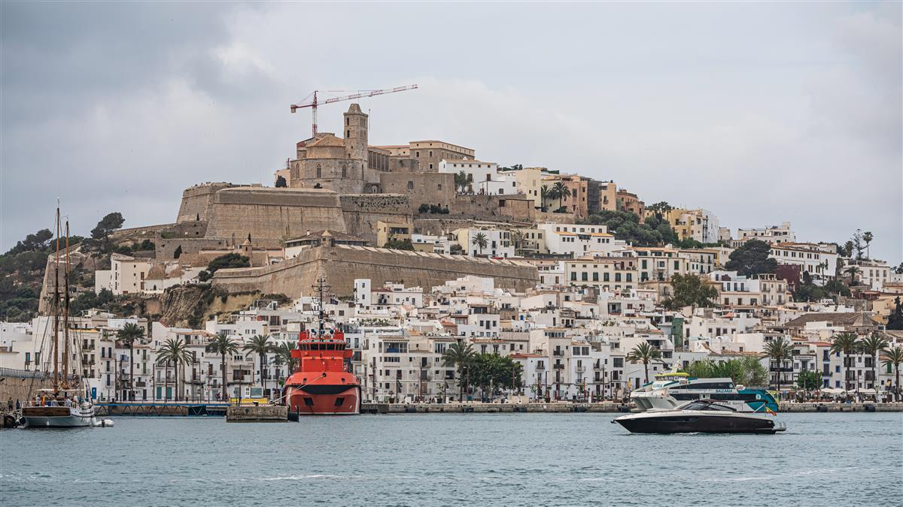

Spain is a land that dances to the rhythm of passion, where every city square
tells a story of empires, artists, and adventurers. It is a country of staggering diversity, stretching from the
green, misty mountains of the north to the sun-scorched plains of Andalusia and the azure waters of the
Mediterranean islands. Here, the legacy of the Romans, the Moors, and the Renaissance kings has orated a
cultural tapestry that is as vibrant as it is deep. Whether you are exploring the whimsical architecture of a
modernist visionary or finding silence in the marble halls of an ancient palace, Spain offers a sensory feast
that is both timeless and intensely alive. This guide invites you to explore 8 essential Spanish destinations
that define the heart and soul of the Iberian Peninsula.
1. Sagrada Família: Gaudi’s Eternal Prayer in Stone

The Basilica i Temple Expiatori de la Sagrada Família is the undisputed crown jewel of
Barcelona and the life's work of the visionary architect Antoni Gaudí. Gaudí’s design is a radical departure
from traditional Gothic cathedrals, combining organic shapes found in nature with complex geometric
structures and deeply symbolic religious motifs.
2. The Alhambra: The Red Fortress of the Moors

Perched majestically on the Sabika Hill against the backdrop of the snow-capped Sierra
Nevada, the Alhambra is a breathtaking palace and fortress complex that serves as the final and most
sophisticated testament to Moorish rule in Spain. Named "Al-Hamra" (The Red One) for the color of its stone
walls at sunset, this UNESCO World Heritage site is widely considered the pinnacle of Islamic architecture
in Europe.
3. Park Güell: A Whimsical Journey through Nature

Park Güell is another of Antoni Gaudí’s extraordinary contributions to Barcelona,
originally intended as a luxury housing estate but later converted into a public park. Here, Gaudí’s
"naturalist" phase is on full display; he sought to harmonize architecture with the rugged landscape of
Carmel Hill, creating a whimsical wonderland where stone structures seem to grow directly out of the earth.
4. Plaza de España: Seville's Cinematic Grandeur

Built for the Ibero-American Exposition of 1929, the Plaza de España in Seville is a
monumental semi-circular complex that combines elements of Renaissance, Baroque, and Neo-Moorish styles. It
is a spectacle of light, color, and immense scale, widely considered one of the most beautiful public
squares in the world.
5. The Royal Palace of Madrid: A Monument to Bourbon Elegance

The Palacio Real de Madrid is the official residence of the Spanish Royal Family, and with
over 3,400 rooms, it is the largest functioning royal palace in Western Europe. While the royals today live
in the more modest Palace of Zarzuela, the Palacio Real remains the heart of the Spanish state, used for
ceremonies, banquets, and official visits.
6. The Mosque-Cathedral of Córdoba: A Forest of Two Faiths

The Mezquita-Catedral de Córdoba is one of the most unique and historically significant
buildings in the world. It is a physical manifestation of Spain's complex religious history—a massive
8th-century mosque that was converted into a Christian cathedral in the 13th century.
7. The City of Arts and Sciences: Valencia's Futuristic Oasis

Designed by the world-famous architect Santiago Calatrava and Félix Candela, the City of
Arts and Sciences in Valencia is a staggering ultra-modern complex that looks like a colony from a distant
future.
8. Ibiza: The White Island of Duality

While Ibiza is globally famous for its electric nightlife and world-class DJs, there is a
whole other side to the "White Island" that is just as captivating. Beyond the neon lights of the clubs lies
a landscape of rugged pine forests, hidden turquoise coves, and ancient stone architecture.
The Endless Passion of Spain: Spain is a country that
stays with you, long after you have left its sun-drenched shores. From the architectural genius of Gaudí to the
Moorish whispers of the Alhambra, every journey here is a celebration of life itself. ¡Buen viaje!
The Signature of Excellence
Why Choose Luxe Voyages?
Curated Excellence
Every destination and accommodation is hand-selected to meet the
highest standards of luxury.
Direct Booking
Book directly with verified premium providers to ensure the best rates
and exclusive perks.
Global Legacy
Our worldwide presence ensures you have premium support wherever your
journey takes you.
Guest Experiences
From Our Global Travelers
"Luxe Voyages didn't just book a trip; they crafted an unforgettable experience. Every detail
was handled with unparalleled professionalism."
Julian Montgomery
Verified
Global
Traveler